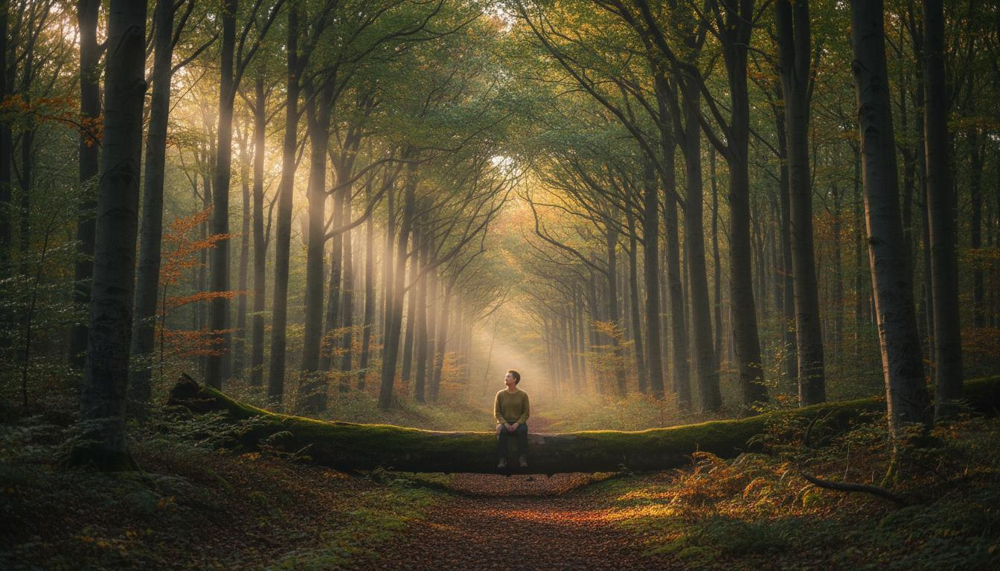
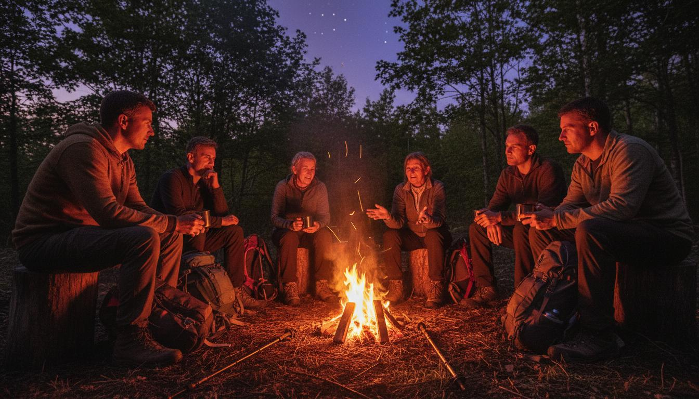

Esci dal rumore.
Torna a sentire dove sei.
Due giorni nel selvatico: cammini, ti orienti, costruisci, accendi un fuoco, cucini, esplori e passi una notte nel bosco. Ma soprattutto hai tempo per una cosa diventata sorprendentemente difficile: esserci.
Circa 30 ore · 2 giorni e 1 notte · Appennino
Quando è stata l'ultima volta che hai passato due giorni senza dover produrre niente?
Lavoro. Messaggi. Schermi. Impegni. Programmi. La testa continua a correre anche quando finalmente hai un po' di tempo.
Escape the City nasce per creare uno spazio diverso. Non per farti scappare dalla tua vita. Per farti tornare dentro un'esperienza.
Qui le cose tornano concrete.
Per arrivare al campo dovrai orientarti. Per cucinare dovrai procurarti ciò che serve. Per accendere il fuoco dovrai provare. Per attraversare la notte dovrai ascoltare. Per costruire dovrai collaborare.
E in mezzo ci saranno momenti in cui non dovrai fare niente. Solo guardare. Ascoltare. Seguire una curiosità. Stare.
Non è…
Non è un corso di sopravvivenza. Anche se imparerai competenze che potrebbero servirti nel bosco.
Non è un trekking. Anche se cammineremo.
Non è un ritiro. Anche se avremo momenti di silenzio.
Non è una vacanza. Perché qui non vieni semplicemente a riposarti. Vieni a fare esperienza.
Prima fai. Poi capisci.
Non passeremo il weekend a spiegarti cosa dovresti vedere o sentire. Ti metteremo nelle condizioni di fare esperienza. Poi osserveremo cosa è successo. E da lì potranno nascere domande.
Il significato non viene deciso prima. Lo scopri tu.

Il bosco non è lo sfondo.
È parte dell'esperienza.
È qualcosa che dovrai imparare a leggere. Prima sarà un luogo sconosciuto. Poi un territorio. Poi un campo. Poi un luogo in cui riconosci dei punti. E forse, alla fine, qualcosa che senti di conoscere.
Quando la luce finisce,
qualcosa cambia.
Gli occhi non bastano più. Il passo rallenta. I suoni diventano più importanti.
E a un certo punto potrai semplicemente sederti. Da solo. Nel bosco. Senza musica. Senza qualcuno che ti dica cosa sentire. Solo per vedere cosa succede.

La cornice.
Alla fine costruirai qualcosa che non avevi previsto di portare a casa. Quattro pezzi di legno. Dello spago. Le tue mani. All'inizio non sarà altro.
Poi ci passerai dentro un intero weekend. E quando la terrai in mano alla fine, probabilmente non sarà più soltanto legno e spago. Sarà un modo per ricordare.
Escape è per te se…
- vivi in città;
- senti di avere sempre qualcosa da fare;
- ti piace la natura ma non sei un esperto;
- vuoi imparare facendo;
- sei curioso;
- hai voglia di qualcosa di concreto;
- vuoi passare una notte nel bosco;
- vuoi uscire dalla routine senza dover cambiare vita.
Probabilmente non fa per te se cerchi…
- comfort totale;
- attività adrenaliniche continue;
- competizione;
- un corso tecnico avanzato;
- un ritiro terapeutico;
- un weekend organizzato minuto per minuto.
Non possiamo dirtelo in anticipo.
Potresti tornare con una nuova competenza, un ricordo, una domanda, una nuova attenzione, un luogo che ora riconosci, una persona conosciuta nel weekend, un oggetto costruito con le tue mani. Ma non possiamo dirti in anticipo quale sarà la tua esperienza. Ed è proprio questo il bello.
Informazioni e prossime date.
Le domande che ci fanno più spesso.
Devo essere allenato?
Serve una normale condizione fisica per camminare nel bosco e partecipare alle attività. Non è richiesta preparazione specifica.
Devo avere esperienza di bushcraft?
No. Il programma è pensato anche per chi parte da zero.
Devo saper usare una bussola?
No. Imparerai durante l'esperienza.
Cosa succede se piove?
Il programma non viene semplicemente annullato perché piove. Il meteo diventa parte del contesto, con gli opportuni adattamenti di sicurezza: ad esempio si accorcia il trekking e si valorizzano il campo e il fuoco.
Dormiamo davvero nel bosco?
Sì, secondo la formula prevista per l'edizione specifica.
È un'esperienza spirituale? È una terapia?
No. Possono esserci momenti di silenzio, attenzione e riflessione, ma non è richiesto aderire a nessuna pratica o visione spirituale. È un'esperienza educativa ed esperienziale in natura, non una terapia.
E se sono introverso? Posso venire da solo?
Non devi essere estroverso: ci saranno momenti condivisi e momenti personali. E sì, puoi venire da solo — molte persone arrivano senza conoscere nessuno.
Vuoi capire se Escape è il weekend che stai cercando?
Scrivimi e raccontami cosa ti ha portato qui. Ti spiego come funziona, cosa aspettarti, cosa serve e se questa esperienza può essere adatta a te.